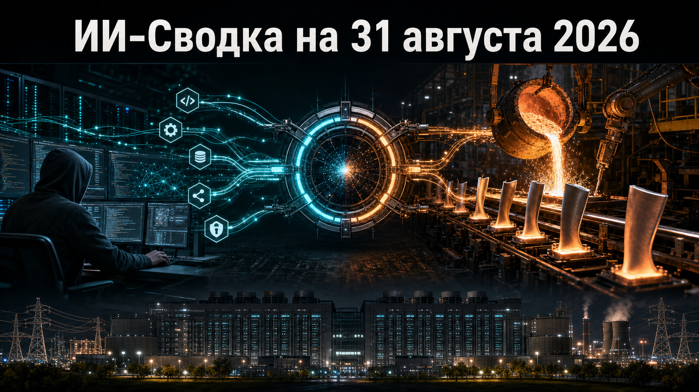

Новостей сегодня меньше, чем обычно
В центре короткой повестки — два инфраструктурных слоя ИИ: контроль действий программных агентов и физическая доступность электроэнергии для дата-центров. OpenAI обновила Codex CLI для более управляемой работы с MCP-инструментами, а SpaceX занялась дефицитным компонентом газовых турбин, от которого зависят сроки ввода новой генерации.
Оба сюжета не меняют возможности базовых моделей напрямую, но показывают, что конкуренция всё заметнее смещается к надёжному исполнению задач и обеспечению вычислительных площадок энергией.
OpenAI выпустила обновление Codex CLI rust-v0.151.0. Согласно официальному описанию релиза, расширения теперь могут просматривать или заменять результаты MCP-инструментов до того, как они поступят модели. Также появилась настраиваемая задержка обнаружения инструментов у опциональных MCP-серверов и объединение конфигураций каталогов плагинов на уровне репозитория.
В релиз вошли исправления сохранения профилей разрешений, изоляции удалённых исполнителей и учёта токенов вложенных субагентов в бюджете основной задачи. Это инкрементальное обновление, а не новая платформа, однако оно важно для команд, которые подключают к агенту ИИ внешние инструменты: контроль промежуточных результатов и расходов становится частью рабочего контура разработки.
Илон Маск подтвердил, что SpaceX строит в Бастропе, штат Техас, производство отливок лопаток и направляющих аппаратов для газовых турбин. Как сообщает TechCrunch, компания рассчитывает устранить одно из узких мест в поставках турбин, на которые вырос спрос из-за быстрого строительства дата-центров.
По оценке Маска, собственное производство дефицитных компонентов может сократить срок ввода новых газовых турбин примерно на 18 месяцев. Это заявление, а не подтверждённый производственный результат; при этом сам шаг показывает, что крупные участники ИИ-рынка начинают вертикально интегрировать не только вычисления, но и цепочку поставок энергогенерирующего оборудования. Одновременно ускоренное расширение газовой генерации сохраняет вопросы о выбросах и экологической цене энергоснабжения дата-центров.